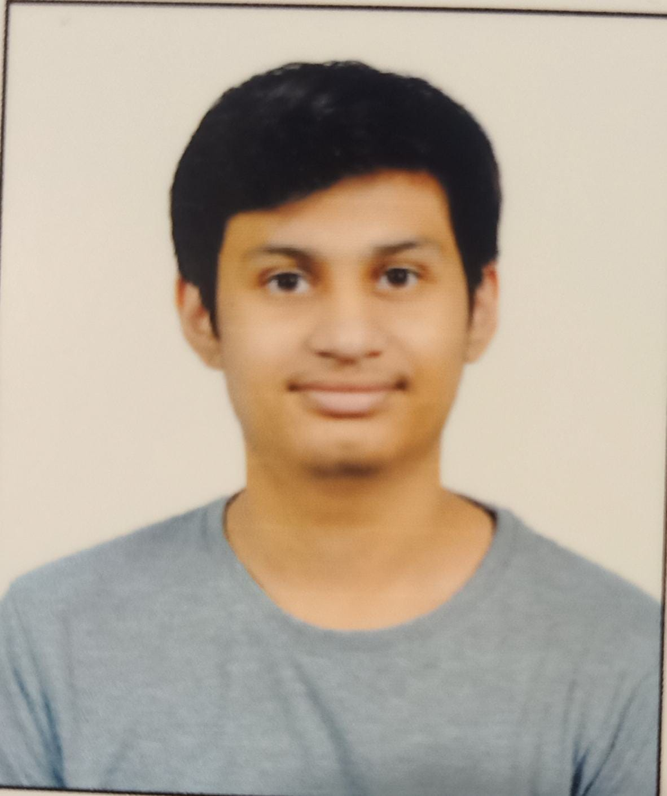

Contact: Mail/Tushar
Instagram: Insta/Tushar
Linkedin: Linkedin/Tushar
Telegram: Tele/Tushar
Twitter: Tweet/Tushar
|  | I am Tushar Sarda from Amravati , Maharashtra . I have qualified various exams like JEE Advanced , JEE Mains , BITSAT , MH-CET , VITEEE , etc . I have secured medals in various exams like IGKO , SSGKO , etc and I am currently pursuing my Integrated dual degree in Metallurgy from the Institute IIT BHU (Varanasi). |